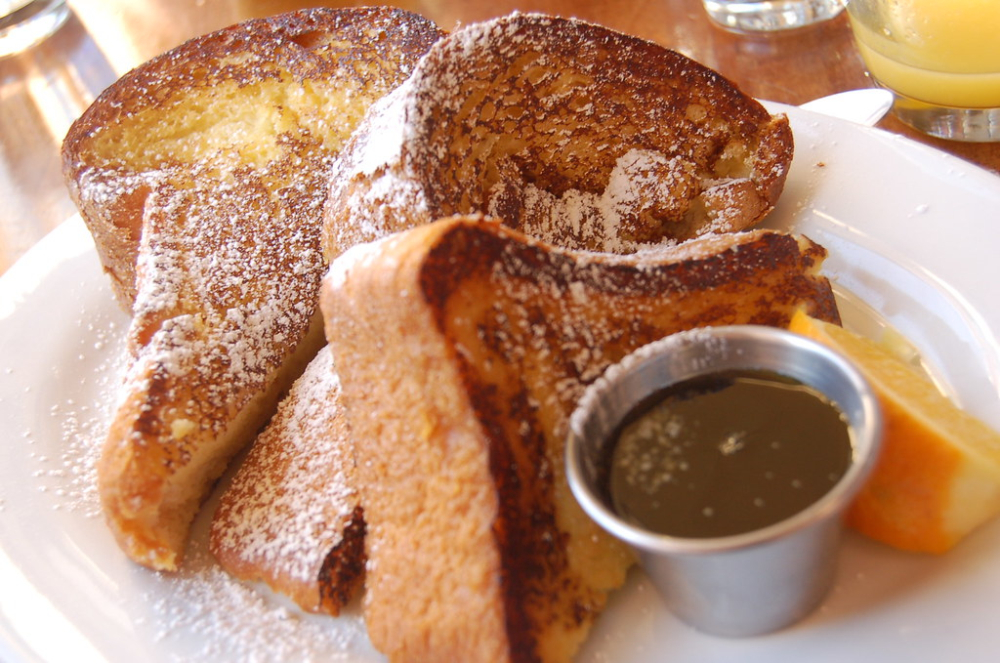

French Toast

Description:
Sink your fork into warm, golden-brown slices of French toast—crispy on the outside, soft and custardy on the inside. Infused with hints of cinnamon and vanilla, then topped with a pat of butter and a drizzle of maple syrup, this breakfast favorite is both nostalgic and irresistible. Perfect for slow weekend mornings or an indulgent brunch.
Ingredients:
- 4 slices thick-cut bread
- 2 large eggs
- 1/2 cup of half-and half of whole milk and cream
- 1 tsp vanilla
- 3/4 tsp ground cinnamon
- 1 tsp sugar
- Pinch of salt
- Butter(preferably salted) for frying according to need
- Optional toppings: Maple syrup, powdered sugar, fresh berries, whipped cream
Instructions:
- In a shallow bowl or pie dish, whisk together the eggs, milk, vanilla, cinnamon, sugar, and salt until fully combined.
- Dip each slice of bread into the custard mixture, allowing it to soak for about 30 seconds per side (longer if the bread is thick or slightly stale).
- Heat a large nonstick skillet or griddle over medium heat. Add the butter and let it melt, swirling to coat the pan evenly.
- Add the soaked bread slices to the skillet. Cook the bread throughout for about 2-3 minutes per side, or until golden brown and slightly crispy. Adjust the heat as needed to avoid burning.
- Serve immediately with your favorite toppings—classics like maple syrup, powdered sugar and butter, or go fancy with berries and whipped cream.
Back to Home